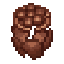
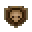

Clay Shards
| Clay Shards | |
|---|---|
 | |
General Information
| |
Type :
|
Stranger Sins Quest item |
Source(s)
| |
| Adam | |


The Clay Shards can be retrieved from Adam. The first thing you need to do is upgrade the Talking Skull tavern. You then need to add items to the tavern to reach a tavern quality of 40

| ||||||||